SL 3.2 — Trigonometric ratios, sine and cosine rules（三角比と正弦定理・余弦定理）
- 直角三角形で、\(\sin\)・\(\cos\)・\(\tan\) を使って辺と角を求められる。
- opposite・adjacent・hypotenuse を、見る角に合わせて正しく決められる。
- 大文字は角、小文字はその向かいの辺という約束を使える。
- sine rule を使う場面が分かり、辺と角の両方を求められる。
- cosine rule を使う場面が分かり、辺と角の両方を求められる。
- \(\dfrac{1}{2}ab\sin C\) で三角形の面積を求められる。
SL 3.2 の欄には、次の3つがあります。
\[ \frac{a}{\sin A} = \frac{b}{\sin B} = \frac{c}{\sin C} \]
\[ c^{2} = a^{2} + b^{2} - 2ab\cos C, \qquad \cos C = \frac{a^{2} + b^{2} - c^{2}}{2ab} \]
\[ A = \frac{1}{2}ab\sin C \]
cosine rule は、辺を求める形と角を求める形の両方が印刷されています。変形する必要はありません。
- \(\sin\)・\(\cos\)・\(\tan\) の定義（SOH-CAH-TOA）はありません。
- Pythagoras の定理もありません。
\[ \sin\theta = \frac{\text{opp}}{\text{hyp}}, \qquad \cos\theta = \frac{\text{adj}}{\text{hyp}}, \qquad \tan\theta = \frac{\text{opp}}{\text{adj}} \]
\[ a^{2} + b^{2} = c^{2} \quad (c \text{ は斜辺}) \]
この2つは覚える必要があります。 逆に言えば、この項目で覚えるのはこれだけです。
シラバスに、はっきり書かれています。
This section does not include the ambiguous case of the sine rule.
sine rule で角を求めると、教科書によっては「答えが2つある場合」を扱います。AI SL では、それは出題されません。
\(\sin^{-1}\) で出てきた角を、そのまま答えにして構いません。もう1つの答えを探す必要はありません。
SL 3.1 と同じです。この項目は角度だらけなので、最初に必ず確かめてください。
ctrl + doc → Document Settings → Angle: DegreeThe idea
1. まず「直角があるか」を見ます
この項目の道具は3つです。どれを使うかは、三角形を見た瞬間に決まります。
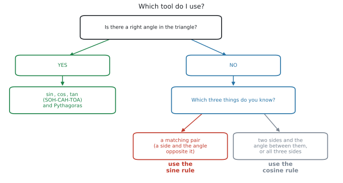
シラバスの Guidance 欄に、こう書かれています。
In all areas of this topic, students should be encouraged to sketch well-labelled diagrams to support their solutions.
分かっている長さと角を全部書き込んだ図をかくところから始めてください。図をかけば、図 1 のどこにいるかが自然に決まります。
2. 直角三角形 — SOH-CAH-TOA
直角三角形の3つの辺には、名前が付いています。
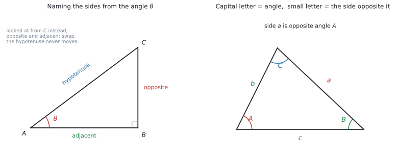
| English | 日本語 | どれのことか |
|---|---|---|
| hypotenuse（hyp） | 斜辺 | 直角の向かいの辺。いつも一番長い |
| opposite（opp） | 対辺 | 見ている角の向かいの辺 |
| adjacent（adj） | 隣辺 | 見ている角のとなりの辺（斜辺ではないほう） |
hypotenuse だけは動きません（直角の向かいで固定）。
残りの2つは、どちらの角から見ているかで入れかわります。図 2 の左で、\(A\) から見れば \(BC\) が opposite ですが、\(C\) から見れば \(BC\) は adjacent になります。
まず「どの角を見ているか」を決めて、それから 3辺に名前を付けてください。
3つの比は、頭文字を並べて SOH-CAH-TOA と覚えます。
\[ \sin\theta = \frac{\text{opp}}{\text{hyp}}, \qquad \cos\theta = \frac{\text{adj}}{\text{hyp}}, \qquad \tan\theta = \frac{\text{opp}}{\text{adj}} \tag{1}\]
角を求めるときは、逆をとります
シラバスが、わざわざこう書いています。
Link to: inverse functions (SL 2.2) when finding angles.
\(\sin\theta = 0.6\) から \(\theta\) を出すには、\(\sin\) の逆を使います。
\[ \theta = \sin^{-1}(0.6) \]
電卓では ctrl + sin です。SL 2.2 でやった \(f^{-1}\) と同じ考え方で、入れた操作をほどいているだけです。
3. 大文字と小文字の約束
sine rule と cosine rule を使うには、この約束を先に守る必要があります。
大文字 \(A\) は角、小文字 \(a\) はその角の向かいの辺
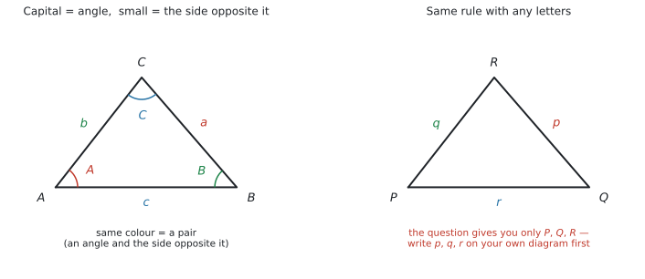
図 3 の左のとおり、角 \(A\) の向かいが \(a\)、角 \(B\) の向かいが \(b\)、角 \(C\) の向かいが \(c\) です。同じ色どうしが1組（pair）です。
問題文が \(PQR\) や \(XYZ\) で書かれていることもあります。そのときは、自分の図に \(a\)、\(b\)、\(c\) を書き込んでから公式に入れてください。
この一手間を飛ばすと、公式のどこに何を入れるのかで必ず迷います。
4. sine rule
\[ \frac{a}{\sin A} = \frac{b}{\sin B} = \frac{c}{\sin C} \tag{2}\]
「辺と、その向かいの角」を1組（pair）と考えます。 sine rule が使えるのは、pair が1組そろっていて、もう1つ何かが分かっているときです。
| 分かっているもの | 求めるもの | 使い方 |
|---|---|---|
| \(a\)、\(A\)、\(B\) | \(b\) | \(b = \dfrac{a\sin B}{\sin A}\) |
| \(a\)、\(A\)、\(b\) | \(B\) | \(\sin B = \dfrac{b\sin A}{a}\) |
角を求めるときは、ひっくり返します
角を求めるときは、分母と分子を入れかえた形のほうが計算しやすくなります。
\[ \frac{\sin A}{a} = \frac{\sin B}{b} = \frac{\sin C}{c} \]
公式集に印刷されているのは上の形ですが、両辺の逆数をとっただけなので、同じことです。
nSolve に入れてしまうのが速いです
\(\sin C\) について解いてから \(\sin^{-1}\) をとる ── この手順を踏まなくても、式のまま電卓に入れて \(C\) を出せます。
nSolve(sin(x)/9 = sin(105)/14, x, 0, 90) → 38.3857...変形の途中で間違えることがないので、答えだけを聞かれている問題ではこちらのほうが安全です（GDCの使い方）。
ただし、答案には式を1行書いてください。 \(\dfrac{\sin C}{9} = \dfrac{\sin 105^\circ}{14}\) が書いてあれば、method mark はもらえます。
\(\dfrac{a}{\sin A} = \dfrac{b}{\sin B} = \dfrac{c}{\sin C}\) と3つ並んでいますが、1回に使うのは2つだけです。
知っている pair と 求めたいほう、この2つを \(=\) で結びます。
5. cosine rule
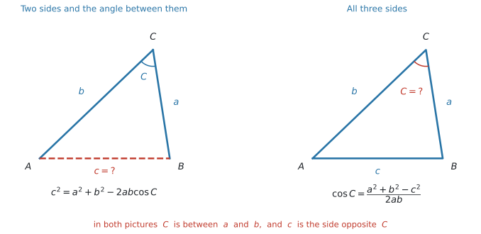
\[ c^{2} = a^{2} + b^{2} - 2ab\cos C \tag{3}\]
\[ \cos C = \frac{a^{2} + b^{2} - c^{2}}{2ab} \tag{4}\]
pair が1組もないときに使います。場面は2つだけです。
\(C\) は「\(a\) と \(b\) のあいだの角」です
式 3 の左辺が \(c^{2}\)、右辺の角が \(C\) であることに注目してください。
求めたい辺 \(c\) の向かいにある角が \(C\)、つまり \(a\) と \(b\) にはさまれた角です。この対応が崩れると、答えが合いません。図 4 の2つの図で、\(C\) と \(c\) が向かい合っていることを確かめてください。
nSolve に入れられます
式 4 を覚えていなくても、式 3 の形のまま角を出せます。
nSolve(9^2 = 5^2 + 7^2 - 2*5*7*cos(x), x, 0, 180) → 95.7391...辺を求めるときも同じです。\(\sqrt{\ }\) の付け忘れも起きません。
nSolve(x^2 = 7^2 + 10^2 - 2*7*10*cos(55), x, 0, 100) → 8.28850...\(\cos\) は \(0^\circ\) から \(180^\circ\) のあいだで1つに決まるので、cosine rule で角を求めるときは範囲を 0, 180 にしておけば確実です（GDCの使い方）。
6. 4つの場面
実際の問題は、次の4つのどれかです。
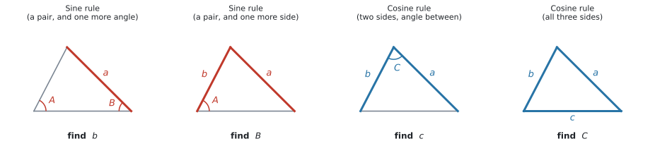
| 分かっているもの | 使う道具 |
|---|---|
| 角2つ＋辺1つ | sine rule |
| 辺2つ＋（その一方の向かいの）角1つ | sine rule |
| 辺2つ＋あいだの角 | cosine rule |
| 辺3つ | cosine rule |
「辺と、その向かいの角」がそろっているかを見てください。
- そろっている → sine rule
- そろっていない → cosine rule
これだけです。図 5 の左2つは、赤い辺と赤い角が向かい合っています。右2つは向かい合っていません。
7. 三角形の面積
\[ A = \frac{1}{2}ab\sin C \tag{5}\]
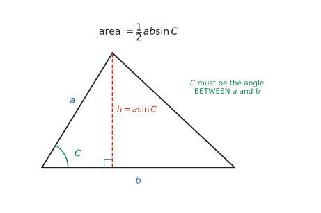
\(a\) と \(b\) のあいだにある角を使います（included angle といいます）。
\(a\) と \(b\) を選んだのに、関係のない角 \(A\) を入れてしまうとまったく違う値になります。cosine rule の 式 3 と、まったく同じ注意です。
中学で習った \(\dfrac{1}{2} \times\) 底辺 \(\times\) 高さ も、そのまま使えます。高さが分かっているときは、そちらのほうが速いです。
Why it works
ここでは、なぜ面積が \(\dfrac{1}{2}ab\sin C\) なのかだけを説明します。
三角形の面積は \(\dfrac{1}{2} \times\) 底辺 \(\times\) 高さ です。図 6 で、底辺は \(b\) です。
高さ \(h\) は、\(a\) を斜辺とする直角三角形の向かいの辺にあたります。ですから SOH-CAH-TOA で
\[ \sin C = \frac{h}{a} \ \Rightarrow \ h = a\sin C \]
これを面積の式に入れると
\[ \text{面積} = \frac{1}{2} \times b \times h = \frac{1}{2} \times b \times a\sin C = \frac{1}{2}ab\sin C \]
新しい公式ではなく、「高さ」を \(a\sin C\) で置きかえただけです。だから \(C\) は \(a\) と \(b\) のあいだの角でなければいけません。
Worked examples
問題文は英語です。意味が理解できなかったら、問題文の下の「日本語訳」を開いてください。解説は日本語です。
例題 1 A ladder of length 4.2 m leans against a vertical wall. The foot of the ladder is 1.5 m from the wall.
(a) Find the angle between the ladder and the ground, correct to three significant figures.
(b) Find how far up the wall the ladder reaches, correct to three significant figures.
日本語訳
長さ \(4.2\) m のはしごが、垂直な壁に立てかけてあります。はしごの足元は壁から \(1.5\) m のところにあります。
(a) はしごと地面のなす角を、有効数字3桁で求めなさい。
(b) はしごが壁のどこまで届くかを、有効数字3桁で求めなさい。
まず図をかいて、直角がどこにあるかを確かめます。壁は垂直なので、壁と地面のあいだが直角です。
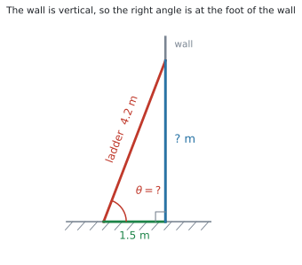
(a) 求める角から見ると
- hypotenuse … はしご \(4.2\)（直角の向かい）
- adjacent … 地面の \(1.5\)（角のとなり）
hyp と adj がそろっているので、CAH つまり \(\cos\) です。
\[ \cos\theta = \frac{1.5}{4.2} = 0.35714\ldots \]
\[ \theta = \cos^{-1}(0.35714\ldots) = 69.075\ldots^\circ \]
有効数字3桁で \(69.1^\circ\) です。
(b) 壁に届く高さは、直角三角形の残りの辺です。Pythagoras で出せます。
\[ \text{高さ} = \sqrt{4.2^{2} - 1.5^{2}} = \sqrt{17.64 - 2.25} \]
\[ = \sqrt{15.39} = 3.9230\ldots \]
有効数字3桁で \(3.92\) m です。
検算。 \(4.2 \times \sin(69.075^\circ) = 3.923\) ✓ \(\sin\) を使っても同じです。
- を \(4.2\sin\theta\) で出すこともできますが、そのときは \(69.1\) ではなく \(69.075\ldots\) を使ってください。
Pythagoras なら (a) の答えを使わないので、(a) を間違えても (b) は正解になります。 使えるときは、そちらのほうが安全です。
(a) \(\cos\theta = \dfrac{1.5}{4.2}\), so \(\theta = 69.1^\circ\) (3 s.f.)
(b) height \(= \sqrt{4.2^{2} - 1.5^{2}} = \sqrt{15.39} = 3.92\) m (3 s.f.)
例題 2 In triangle \(ABC\), \(\hat{A} = 42^\circ\), \(\hat{B} = 63^\circ\) and \(a = 8\) cm.
(a) Find the size of \(\hat{C}\).
(b) Find the length of \(b\), correct to three significant figures.
日本語訳
三角形 \(ABC\) で、\(\hat{A} = 42^\circ\)、\(\hat{B} = 63^\circ\)、\(a = 8\) cm です。
(a) \(\hat{C}\) の大きさを求めなさい。
(b) \(b\) の長さを有効数字3桁で求めなさい。
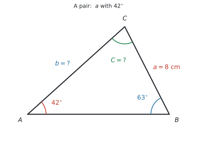
(a) 三角形の内角の和は \(180^\circ\) です。
\[ \hat{C} = 180^\circ - 42^\circ - 63^\circ = 75^\circ \]
(b) pair がそろっているかを見ます。\(a\) と \(\hat{A}\) は向かい合っている pair です。求めたい \(b\) の向かいの \(\hat{B}\) も分かっています。
pair があるので sine rule です。
\[ \frac{b}{\sin B} = \frac{a}{\sin A} \]
\(b\) について解きます。
\[ b = \frac{a\sin B}{\sin A} = \frac{8 \times \sin 63^\circ}{\sin 42^\circ} = 10.652\ldots \]
有効数字3桁で \(10.7\) cm です。
検算。 \(\hat{B} = 63^\circ > \hat{A} = 42^\circ\) なので、\(b\) は \(a\) より長いはずです。\(10.7 > 8\) ✓
三角形では、角が大きいほど、その向かいの辺が長くなります。
答えが出たら、この関係で必ず確かめてください。式の入れ間違いは、ほとんどこれで見つかります。
(a) \(\hat{C} = 180^\circ - 42^\circ - 63^\circ = 75^\circ\)
(b) \(\dfrac{b}{\sin 63^\circ} = \dfrac{8}{\sin 42^\circ}\), so \(b = \dfrac{8\sin 63^\circ}{\sin 42^\circ} = 10.7\) cm (3 s.f.)
例題 3 In triangle \(ABC\), \(\hat{B} = 105^\circ\), \(b = 14\) cm and \(c = 9\) cm.
(a) Find the size of \(\hat{C}\), correct to three significant figures.
(b) Find the size of \(\hat{A}\), correct to three significant figures.
日本語訳
三角形 \(ABC\) で、\(\hat{B} = 105^\circ\)、\(b = 14\) cm、\(c = 9\) cm です。
(a) \(\hat{C}\) の大きさを有効数字3桁で求めなさい。
(b) \(\hat{A}\) の大きさを有効数字3桁で求めなさい。
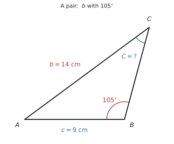
(a) \(b\) と \(\hat{B}\) が pair です。求めたい \(\hat{C}\) の向かいの \(c\) も分かっています。sine rule です。
角を求めるので、ひっくり返した形を使います。
\[ \frac{\sin C}{c} = \frac{\sin B}{b} \]
\[ \sin C = \frac{c\sin B}{b} = \frac{9 \times \sin 105^\circ}{14} = 0.62095\ldots \]
\[ \hat{C} = \sin^{-1}(0.62095\ldots) = 38.385\ldots^\circ \]
有効数字3桁で \(38.4^\circ\) です。
この答えで終わりです。 ambiguous case は出ません。
検算。 \(\hat{B} = 105^\circ\) はすでに鈍角です。三角形に鈍角は1つしかないので、\(\hat{C}\) は必ず鋭角です ✓
(b) 内角の和を使います。丸めた \(38.4\) ではなく、\(38.385\ldots\) を使ってください。
\[ \hat{A} = 180^\circ - 105^\circ - 38.385\ldots^\circ = 36.614\ldots^\circ \]
有効数字3桁で \(36.6^\circ\) です。
(a) \(\dfrac{\sin C}{9} = \dfrac{\sin 105^\circ}{14}\), so \(\sin C = 0.6209\ldots\) and \(\hat{C} = 38.4^\circ\) (3 s.f.)
(b) \(\hat{A} = 180^\circ - 105^\circ - 38.38\ldots^\circ = 36.6^\circ\) (3 s.f.)
例題 4 In triangle \(ABC\), \(a = 7\) cm, \(b = 10\) cm and \(\hat{C} = 55^\circ\).
(a) Find the length of \(c\), correct to three significant figures.
(b) Find the area of the triangle, correct to three significant figures.
日本語訳
三角形 \(ABC\) で、\(a = 7\) cm、\(b = 10\) cm、\(\hat{C} = 55^\circ\) です。
(a) \(c\) の長さを有効数字3桁で求めなさい。
(b) 三角形の面積を有効数字3桁で求めなさい。
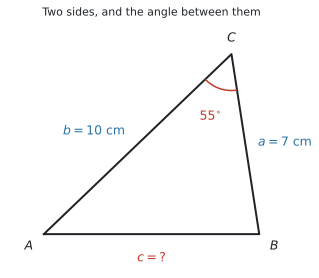
(a) pair があるかを見ます。\(\hat{C}\) は分かっていますが、その向かいの \(c\) が分かりません。\(a\) と \(b\) は分かっていますが、\(\hat{A}\) も \(\hat{B}\) も分かりません。
pair がないので cosine rule です。\(\hat{C}\) は \(a\) と \(b\) にはさまれた角なので、そのまま使えます。
\[ c^{2} = 7^{2} + 10^{2} - 2(7)(10)\cos 55^\circ \]
\[ c^{2} = 49 + 100 - 140 \times 0.57357\ldots = 68.699\ldots \]
\[ c = \sqrt{68.699\ldots} = 8.2885\ldots \]
有効数字3桁で \(8.29\) cm です。
\(\sqrt{\ }\) を忘れないでください。 ここで止めると \(68.7\) と答えてしまいます。
(b) 面積の公式です。\(a\)、\(b\) と、そのあいだの \(\hat{C}\) がそろっています。
\[ \text{面積} = \frac{1}{2}(7)(10)\sin 55^\circ = 35 \times 0.81915\ldots = 28.670\ldots \]
有効数字3桁で \(28.7\) cm\(^{2}\) です。
(a) \(c^{2} = 7^{2} + 10^{2} - 2(7)(10)\cos 55^\circ = 68.69\ldots\), so \(c = 8.29\) cm (3 s.f.)
(b) Area \(= \dfrac{1}{2}(7)(10)\sin 55^\circ = 28.7\) cm\(^{2}\) (3 s.f.)
例題 5 A triangle has sides of length 5 cm, 7 cm and 9 cm.
(a) Find the size of the largest angle in the triangle, correct to three significant figures.
(b) Explain how you knew which angle was the largest.
日本語訳
ある三角形の辺の長さは \(5\) cm、\(7\) cm、\(9\) cm です。
(a) この三角形の最大の角の大きさを、有効数字3桁で求めなさい。
(b) どの角が最大かを、どうやって判断したかを説明しなさい。
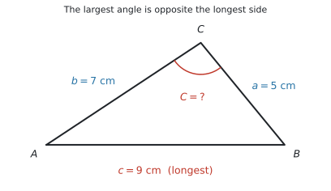
(a) 3辺だけが分かっているので、cosine rule の角を求める形です。
最大の角は一番長い辺 \(9\) の向かいなので、\(c = 9\)、\(a = 5\)、\(b = 7\) とおきます。
\[ \cos C = \frac{a^{2} + b^{2} - c^{2}}{2ab} = \frac{25 + 49 - 81}{2(5)(7)} = \frac{-7}{70} = -0.1 \]
\[ \hat{C} = \cos^{-1}(-0.1) = 95.739\ldots^\circ \]
有効数字3桁で \(95.7^\circ\) です。
\(\cos^{-1}\) に負の数を入れると、電卓は \(90^\circ\) より大きい角を返します。これは間違いではありません。
\(\cos C = -0.1\) のように分子が負になったら、その角は鈍角だと分かります。\(\sin^{-1}\) と違って、\(\cos^{-1}\) は \(0^\circ\) から \(180^\circ\) までを \(1\) つに決めてくれます。
(b) Explain なので、英語で理由を書きます。
試験ではこう書く
In a triangle, the largest angle is always opposite the longest side. The longest side is 9 cm, so the largest angle is the one opposite it.
（三角形では、最大の角はいつも最長の辺の向かいにある。最長の辺は \(9\) cm なので、最大の角はその向かいの角である、という意味です。）
(a) \(\cos C = \dfrac{5^{2} + 7^{2} - 9^{2}}{2(5)(7)} = -0.1\), so \(\hat{C} = 95.7^\circ\) (3 s.f.)
(b) In a triangle, the largest angle is always opposite the longest side. The longest side is 9 cm, so the largest angle is the one opposite it.
例題 6 A triangular plot of land has two sides of length 40 m and 55 m. The angle between these two sides is \(68^\circ\).
(a) Find the area of the plot, correct to three significant figures.
(b) Find the length of the third side, correct to three significant figures.
(c) A fence is built around the whole plot. The fencing costs 12 dollars per metre. Find the total cost of the fence, correct to the nearest dollar.
日本語訳
三角形の土地の \(2\) 辺の長さが \(40\) m と \(55\) m です。この \(2\) 辺のあいだの角は \(68^\circ\) です。
(a) この土地の面積を有効数字3桁で求めなさい。
(b) 第3の辺の長さを有効数字3桁で求めなさい。
(c) 土地全体のまわりに柵を作ります。柵は \(1\) m あたり \(12\) ドルかかります。柵の総費用を、\(1\) ドルの位まで求めなさい。
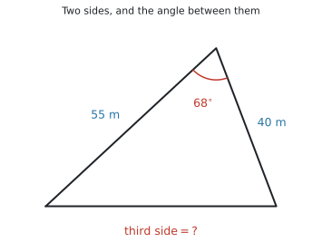
(a) 「\(2\) 辺と、そのあいだの角」がそろっているので、面積の公式がそのまま使えます。
\[ \text{面積} = \frac{1}{2}(40)(55)\sin 68^\circ = 1100 \times 0.92718\ldots = 1019.9\ldots \]
有効数字3桁で \(1020\) m\(^{2}\) です。
(b) 同じ「\(2\) 辺とあいだの角」なので、cosine rule です。
\[ c^{2} = 40^{2} + 55^{2} - 2(40)(55)\cos 68^\circ \]
\[ = 4625 - 1648.2\ldots = 2976.7\ldots \]
\[ c = \sqrt{2976.7\ldots} = 54.559\ldots \]
有効数字3桁で \(54.6\) m です。
(c) 柵は3辺すべてに沿って作ります。
\[ \text{周の長さ} = 40 + 55 + 54.559\ldots = 149.55\ldots \]
\[ \text{費用} = 149.55\ldots \times 12 = 1794.7\ldots \]
\(1\) ドルの位まで求めるので、\(1795\) ドルです。
この問題では、\(54.6\) で計算しても \(1795.2 \to 1795\) となり、たまたま同じ答えになります。
ですが、それは運がよかっただけです。丸めた値を次の計算に使うと、答えが変わることがあります（SL 2.6 で見たとおりです）。
丸めるのは、答えを書く最後の1回だけ。 電卓に入ったままの \(54.559\ldots\) を使う習慣を付けてください。
(a) Area \(= \dfrac{1}{2}(40)(55)\sin 68^\circ = 1020\) m\(^{2}\) (3 s.f.)
(b) \(c^{2} = 40^{2} + 55^{2} - 2(40)(55)\cos 68^\circ = 2976.7\ldots\), so \(c = 54.6\) m (3 s.f.)
(c) Perimeter \(= 40 + 55 + 54.55\ldots = 149.55\ldots\) m
Cost \(= 149.55\ldots \times 12 = 1795\) dollars (nearest dollar)
Common errors
先に「どの角から見るか」を決めてください。 決めてから3辺に名前を付けます。
hypotenuse だけは動きませんが、opposite と adjacent は見る角で入れかわります（図 2）。
判断は1つだけです。「辺と、その向かいの角」がそろっているか。
そろっていれば sine rule、そろっていなければ cosine rule です（表 4）。
\(c^{2} = 68.699\ldots\) で止めて、\(68.7\) と答えてしまう誤りです。
求められているのは \(c\) であって \(c^{2}\) ではありません。 出た数が「辺の長さとして大きすぎないか」を、必ず見てください。
\(\dfrac{1}{2}ab\sin C\) の \(C\) は、\(a\) と \(b\) のあいだの角です。
\(a\) と \(b\) を選んだのに \(\hat{A}\) を入れると、まったく違う値になります。cosine rule も同じです。
\(\sin 55^\circ\) のつもりが \(\sin(55\ \text{rad})\) になると、符号すら合いません。
答えが明らかにおかしいときは、まず Angle: Degree を疑ってください。
AI SL に ambiguous case は出ません（シラバスに明記）。
\(\sin^{-1}\) で出た角が答えです。時間を使わないでください。
\(38.4^\circ\) ではなく \(38.385\ldots^\circ\) を使ってください。
角を丸めてから \(\sin\) をとると、辺の長さが \(3\) 桁目で変わることがあります。
シラバスが sketch well-labelled diagrams と名指ししています。
分かっている長さと角を書き込んだ図をかけば、どの道具を使うかは自然に決まります。図がないと、公式のどこに何を入れるかで迷います。
Using your GDC (TI-Nspire CX II)
1. 角の設定を確かめる
ctrl + doc → Document Settings → Angle: Degreeこの項目では、ここを間違えると全部間違えます。 試験が始まったら最初に確かめてください。
2. \(\sin\)、\(\cos\)、\(\tan\) と、その逆
trig キー → sin( cos( tan(
ctrl + sin → sin⁻¹(
ctrl + cos → cos⁻¹(
ctrl + tan → tan⁻¹(辺を求めるときは \(\sin\)、角を求めるときは \(\sin^{-1}\) です。
3. 式をそのまま1行で入れる
途中で丸めないために、1つの式にまとめて入れるのが確実です。
8 * sin(63) / sin(42) → 10.6527...
√(7^2 + 10^2 - 2*7*10*cos(55)) → 8.28850...
cos⁻¹((5^2 + 7^2 - 9^2)/(2*5*7)) → 95.7391...cosine rule は、\(\sqrt{\ }\) ごと1行で書いてしまうと、\(\sqrt{\ }\) の付け忘れも防げます。
4. 出た角を、そのまま次に使う
cos⁻¹(1.5/4.2) → ctrl + var → th
4.2 * sin(th) → 3.92300...ctrl + var は sto→（記憶）です。紙に写して打ち直すと、そこで丸め誤差が入ります。
5. nSolve ── 式を変形せずに解く
menu → Algebra → Numerical Solvesine rule も cosine rule も、公式集の形のまま入れて解けます。 「\(b\) について解く」「\(\sin C\) について解く」といった変形が要りません。
sine rule で辺（例題2）
nSolve(x/sin(63) = 8/sin(42), x, 0, 100) → 10.6527...sine rule で角（例題3）
nSolve(sin(x)/9 = sin(105)/14, x, 0, 90) → 38.3857...cosine rule で辺（例題4）
nSolve(x^2 = 7^2 + 10^2 - 2*7*10*cos(55), x, 0, 100) → 8.28850...cosine rule で角（例題5）
nSolve(9^2 = 5^2 + 7^2 - 2*5*7*cos(x), x, 0, 180) → 95.7391...面積から角
nSolve(0.5*9*14*sin(x) = 50, x, 0, 90) → 52.528...最後の2つの数は、解を探す範囲（lower bound と upper bound）です。
nSolve は解を1つしか返しません（SL 1.8）。どれが返ってくるかは、範囲で決めます。
- cosine rule …
0, 180でよいです。\(\cos\) はこの範囲で \(1\) つに決まります。 - sine rule …
0, 90にしてください。\(\sin x = \sin(180^\circ - x)\) なので、範囲を切らないと \(141.6^\circ\) のような答えが返ってくることがあります。
AI SL では、sine rule で求める角は必ず鋭角です。 ambiguous case が出ないということは、鈍角のほうは答えにならない、という意味だからです。ですから 0, 90 で構いません。
nSolve は速いですが、電卓に出た数だけを書くと method mark が取れません。
\[ \frac{\sin C}{9} = \frac{\sin 105^\circ}{14} \]
この1行があれば、答えが合っていなくても method mark はもらえます。電卓は計算だけ、式は自分で書くと分けてください。
TI-Nspire の Geometry 機能は Press-to-Test で制限があります。この項目の図は、紙にかいてください。
電卓は「数を出す道具」、紙は「どの式を使うか決める道具」と分けると、迷いません。
Exercises
各問題に、折りたたみが3つ付いています。日本語訳、解答例（答案用紙に書くべきこと。英語です）、解説（なぜそうなるか。日本語です）。
まず自分で解いて、次に解答例と見くらべてください。解説は、合わなかったときだけ開けば十分です。
1 A right-angled triangle has a hypotenuse of length 13 cm and one other side of length 5 cm.
(a) Find the length of the third side.
(b) Find the size of the smallest angle in the triangle, correct to three significant figures.
日本語訳
ある直角三角形の斜辺の長さは \(13\) cm、もう1つの辺の長さは \(5\) cm です。
(a) 第3の辺の長さを求めなさい。
(b) この三角形の最小の角の大きさを、有効数字3桁で求めなさい。
(a) \(\sqrt{13^{2} - 5^{2}} = \sqrt{144} = 12\) cm
(b) \(\sin\theta = \dfrac{5}{13}\), so \(\theta = 22.6^\circ\) (3 s.f.)
\(5\)、\(12\)、\(13\) は Pythagoras の組です。斜辺は一番長い辺なので、\(13\) から引きます。
(b) 最小の角は、一番短い辺 \(5\) の向かいです。その角から見ると \(5\) が opposite、\(13\) が hypotenuse なので SOH、\(\sin\) を使います。
2 A ramp rises 0.8 m over a horizontal distance of 6 m.
(a) Find the angle the ramp makes with the horizontal, correct to three significant figures.
(b) Find the length of the ramp, correct to three significant figures.
日本語訳
あるスロープは、水平距離 \(6\) m のあいだに \(0.8\) m 上がります。
(a) スロープが水平となす角を、有効数字3桁で求めなさい。
(b) スロープの長さを有効数字3桁で求めなさい。
(a) \(\tan\theta = \dfrac{0.8}{6}\), so \(\theta = 7.59^\circ\) (3 s.f.)
(b) \(\sqrt{6^{2} + 0.8^{2}} = \sqrt{36.64} = 6.05\) m (3 s.f.)
(a) 分かっているのは opposite（\(0.8\)）と adjacent（\(6\)）なので TOA、\(\tan\) です。斜辺は分かっていません。
(b) スロープそのものが hypotenuse です。Pythagoras で出します。
\(6.05\) と \(6\) がほとんど同じなのは、傾きがとても緩いからです。SL 2.1 で見た「坂の傾き」と同じ場面です。
3 In triangle \(ABC\), \(\hat{A} = 38^\circ\), \(\hat{C} = 64^\circ\) and \(c = 12\) cm.
(a) Find the size of \(\hat{B}\).
(b) Find the length of \(a\), correct to three significant figures.
日本語訳
三角形 \(ABC\) で、\(\hat{A} = 38^\circ\)、\(\hat{C} = 64^\circ\)、\(c = 12\) cm です。
(a) \(\hat{B}\) の大きさを求めなさい。
(b) \(a\) の長さを有効数字3桁で求めなさい。
(a) \(\hat{B} = 180^\circ - 38^\circ - 64^\circ = 78^\circ\)
(b) \(\dfrac{a}{\sin 38^\circ} = \dfrac{12}{\sin 64^\circ}\), so \(a = \dfrac{12\sin 38^\circ}{\sin 64^\circ} = 8.22\) cm (3 s.f.)
\(c\) と \(\hat{C}\) が pair です。求めたい \(a\) の向かいの \(\hat{A}\) も分かっているので、sine rule が使えます。
検算：\(\hat{A} = 38^\circ < \hat{C} = 64^\circ\) なので \(a < c\)、つまり \(8.22 < 12\) ✓
4 In triangle \(ABC\), \(\hat{A} = 112^\circ\), \(a = 20\) cm and \(b = 13\) cm.
(a) Find the size of \(\hat{B}\), correct to three significant figures.
(b) Explain why \(\hat{B}\) must be an acute angle.
日本語訳
三角形 \(ABC\) で、\(\hat{A} = 112^\circ\)、\(a = 20\) cm、\(b = 13\) cm です。
(a) \(\hat{B}\) の大きさを有効数字3桁で求めなさい。
(b) \(\hat{B}\) が必ず鋭角である理由を説明しなさい。
(a) \(\dfrac{\sin B}{13} = \dfrac{\sin 112^\circ}{20}\), so \(\sin B = 0.6026\ldots\) and \(\hat{B} = 37.1^\circ\) (3 s.f.)
(b) A triangle can have at most one obtuse angle, and \(\hat{A} = 112^\circ\) is already obtuse, so \(\hat{B}\) must be acute.
\(a\) と \(\hat{A}\) が pair なので sine rule。角を求めるので、ひっくり返した形が便利です。
(b) がこの問題の中心です。三角形の内角の和は \(180^\circ\) なので、鈍角（\(90^\circ\) より大きい角）は \(1\) つしか入りません。
これが、AI SL で ambiguous case が出ない理由でもあります。問題は必ず、答えが \(1\) つに決まるように作られています。
5 In triangle \(ABC\), \(a = 9\) cm, \(b = 12\) cm and \(\hat{C} = 40^\circ\).
(a) Find the length of \(c\), correct to three significant figures.
(b) Find the area of the triangle, correct to three significant figures.
日本語訳
三角形 \(ABC\) で、\(a = 9\) cm、\(b = 12\) cm、\(\hat{C} = 40^\circ\) です。
(a) \(c\) の長さを有効数字3桁で求めなさい。
(b) 三角形の面積を有効数字3桁で求めなさい。
(a) \(c^{2} = 9^{2} + 12^{2} - 2(9)(12)\cos 40^\circ = 59.53\ldots\), so \(c = 7.72\) cm (3 s.f.)
(b) Area \(= \dfrac{1}{2}(9)(12)\sin 40^\circ = 34.7\) cm\(^{2}\) (3 s.f.)
「\(2\) 辺とあいだの角」なので cosine rule。\(\hat{C}\) は \(a\) と \(b\) にはさまれているので、そのまま使えます。
\(\sqrt{\ }\) を忘れないでください。 \(59.5\) は \(c^{2}\) です。
(b) も同じ \(3\) つで出ます。cosine rule と面積の公式は、必要な材料がまったく同じです。片方が出せれば、もう片方も必ず出せます。
6 A triangle has sides of length 6 cm, 8 cm and 11 cm.
(a) Find the size of the largest angle, correct to three significant figures.
(b) Find the area of the triangle, correct to three significant figures.
日本語訳
ある三角形の辺の長さは \(6\) cm、\(8\) cm、\(11\) cm です。
(a) 最大の角の大きさを、有効数字3桁で求めなさい。
(b) 三角形の面積を有効数字3桁で求めなさい。
(a) \(\cos C = \dfrac{6^{2} + 8^{2} - 11^{2}}{2(6)(8)} = -0.21875\), so \(\hat{C} = 103^\circ\) (3 s.f.)
(b) Area \(= \dfrac{1}{2}(6)(8)\sin 102.6\ldots^\circ = 23.4\) cm\(^{2}\) (3 s.f.)
3辺だけなので cosine rule の角を求める形。最大の角は最長の辺 \(11\) の向かいなので、\(c = 11\) とおきます。
\(\cos C\) が負になったので、\(\hat{C}\) は鈍角です。\(102.635\ldots^\circ\) を有効数字3桁にすると \(103^\circ\) です。
(b) (a) で角が出たので、面積は \(\dfrac{1}{2}(6)(8)\sin C\) で出ます。ここで \(103\) ではなく \(102.635\ldots\) を使ってください。
7 A triangle has two sides of length 15 cm and 22 cm, with an angle of \(84^\circ\) between them.
(a) Find the area of the triangle, correct to three significant figures.
日本語訳
ある三角形の \(2\) 辺の長さは \(15\) cm と \(22\) cm で、そのあいだの角は \(84^\circ\) です。
(a) 三角形の面積を有効数字3桁で求めなさい。
(a) Area \(= \dfrac{1}{2}(15)(22)\sin 84^\circ = 164\) cm\(^{2}\) (3 s.f.)
公式に入れるだけの問題です。\(84^\circ\) が\(2\) 辺のあいだの角だと問題文に書いてあるので、そのまま使えます。
参考：\(84^\circ\) は \(90^\circ\) に近いので、\(\sin 84^\circ = 0.9945\) とほぼ \(1\) です。つまり面積は \(\dfrac{1}{2}(15)(22) = 165\) にとても近くなります。\(164\) という答えが妥当かどうかは、これで確かめられます。
8 A triangle has two sides of length 9 cm and 14 cm. Its area is 50 cm\(^{2}\).
(a) Find the size of the acute angle between these two sides, correct to three significant figures.
日本語訳
ある三角形の \(2\) 辺の長さは \(9\) cm と \(14\) cm で、面積は \(50\) cm\(^{2}\) です。
(a) この \(2\) 辺のあいだの鋭角の大きさを、有効数字3桁で求めなさい。
(a) \(\dfrac{1}{2}(9)(14)\sin C = 50\), so \(\sin C = \dfrac{50}{63} = 0.7936\ldots\) and \(\hat{C} = 52.5^\circ\) (3 s.f.)
公式を逆向きに使う問題です。\(\dfrac{1}{2}(9)(14) = 63\) を先に計算してから割ると、式が短くなります。
問題文が the acute angle と指定しているのは、\(\sin C = 0.7936\) を満たす角が \(52.5^\circ\) と \(127.5^\circ\) の \(2\) つあるからです。ここは面積の公式であって sine rule ではないので、ambiguous case の話とは別です。問題文の指定に従ってください。
nSolve(0.5*9*14*sin(x) = 50, x) でも出ます。
9 In triangle \(ABC\), \(AB = 8\) cm, \(BC = 11\) cm and \(\hat{B} = 47^\circ\).
(a) Find the length of \(AC\), correct to three significant figures.
(b) Find the size of \(\hat{C}\), correct to three significant figures.
(c) Find the area of the triangle, correct to three significant figures.
日本語訳
三角形 \(ABC\) で、\(AB = 8\) cm、\(BC = 11\) cm、\(\hat{B} = 47^\circ\) です。
(a) \(AC\) の長さを有効数字3桁で求めなさい。
(b) \(\hat{C}\) の大きさを有効数字3桁で求めなさい。
(c) 三角形の面積を有効数字3桁で求めなさい。
(a) \(AC^{2} = 8^{2} + 11^{2} - 2(8)(11)\cos 47^\circ = 64.96\ldots\), so \(AC = 8.06\) cm (3 s.f.)
(b) \(\dfrac{\sin C}{8} = \dfrac{\sin 47^\circ}{8.060\ldots}\), so \(\sin C = 0.7258\ldots\) and \(\hat{C} = 46.5^\circ\) (3 s.f.)
(c) Area \(= \dfrac{1}{2}(8)(11)\sin 47^\circ = 32.2\) cm\(^{2}\) (3 s.f.)
まず図をかいて、\(a\)、\(b\)、\(c\) を書き込んでください。 \(AB = c = 8\)、\(BC = a = 11\)、\(AC = b\) です。\(\hat{B}\) は \(a\) と \(c\) にはさまれています。
(a) pair がないので cosine rule。\(b^{2} = a^{2} + c^{2} - 2ac\cos B\) の形です。文字が \(c\) と \(C\) ではなく \(b\) と \(B\) になっているだけで、中身は同じです。
(b) (a) で \(b\) と \(\hat{B}\) の pair ができたので、sine rule が使えます。\(\hat{C}\) は一番短い辺 \(c = 8\) の向かいなので、必ず鋭角です。
(c) 面積は (a) を使わずに出せます。\(a\)、\(c\) と、そのあいだの \(\hat{B}\) がそろっているからです。(a) を間違えても (c) は正解になります。
10 Two points \(A\) and \(B\) on a straight road are 250 m apart. A tower \(T\) stands on one side of the road. The angle \(T\hat{A}B\) is \(63^\circ\) and the angle \(T\hat{B}A\) is \(48^\circ\).
(a) Find the size of the angle \(A\hat{T}B\).
(b) Find the distance \(AT\), correct to three significant figures.
(c) Find the area of triangle \(ABT\), correct to three significant figures.
日本語訳
まっすぐな道の上の \(2\) 点 \(A\) と \(B\) は \(250\) m 離れています。道の片側に塔 \(T\) が立っています。角 \(T\hat{A}B\) は \(63^\circ\)、角 \(T\hat{B}A\) は \(48^\circ\) です。
(a) 角 \(A\hat{T}B\) の大きさを求めなさい。
(b) 距離 \(AT\) を有効数字3桁で求めなさい。
(c) 三角形 \(ABT\) の面積を有効数字3桁で求めなさい。
(a) \(A\hat{T}B = 180^\circ - 63^\circ - 48^\circ = 69^\circ\)
(b) \(\dfrac{AT}{\sin 48^\circ} = \dfrac{250}{\sin 69^\circ}\), so \(AT = \dfrac{250\sin 48^\circ}{\sin 69^\circ} = 199\) m (3 s.f.)
(c) Area \(= \dfrac{1}{2}(250)(199.0\ldots)\sin 63^\circ = 22\,200\) m\(^{2}\) (3 s.f.)
まず図をかいてください。 道の上に \(A\) と \(B\)、その片側に \(T\) です。
(b) \(AT\) の向かいは \(\hat{B} = 48^\circ\)、\(AB = 250\) の向かいは \(\hat{T} = 69^\circ\) です。pair が \(2\) 組そろっているので sine rule です。
どの辺がどの角の向かいなのかを、図で確かめてから式に入れてください。ここを取り違えるのが、この形の問題で一番多い誤りです。
(c) \(AT\) と \(AB\) と、そのあいだの \(\hat{A} = 63^\circ\) で面積が出ます。\(199\) ではなく \(199.0039\ldots\) を使ってください。
検算：三角形の高さはおよそ \(199 \times \sin 63^\circ = 177\) m、底辺が \(250\) m なので、面積はおよそ \(\dfrac{1}{2}(250)(177) = 22\,100\) ✓